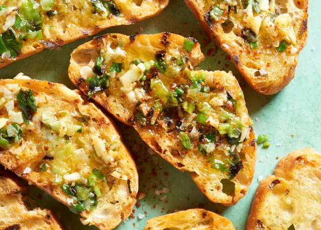

Unbelievable Grilled Garlic Bread
Description
French bread (or Italian) is lightly toasted, spread with a creamy cheese
mixture and grilled until warm, melted, and unbelievably delicious. The
finished bread keeps well in an airtight container.

- 1 cup mayonnaise
- 6 cloves garlic, peeled and minced
- ¾ cup grated Parmesan cheese
- ½ cup shredded Cheddar cheese
- 1 tablespoon half-and-half
- ¼ teaspoon paprika
- 1 (1 pound) loaf French bread, halved lengthwise
Steps:
- Preheat grill for medium heat.
- In a medium bowl, mix the mayonnaise, garlic, and Parmesan cheese. In a
saucepan over medium-low heat, mix the Cheddar cheese, half-and-half, and
paprika. Stir constantly until melted and smooth. Pour into the bowl with
mayonnaise mixture, stirring until well blended.
- Place the French bread on the grill cut side down, and let it toast for a few
minutes. Remove from the grill, and spread the cheese mixture on each side.
Place the halves back together, and wrap the loaf in aluminum foil. Return to
the grill for about 15 minutes, turning occasionally, until the loaf is heated
through and the cheese mixture is hot.